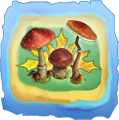

Получено: файл; исходный URL. В статье подписано как фото Грибной поляны. Состояние при съёмке и исходная расстановка не подтверждены; табло и отдельные детали могли измениться в ходе игры. Совпадение файлов разных хостов не проверено. Исходный файл без перекодирования, автор и дата снимка неизвестны. Страница: источник.
Грибная поляна
браузерная социальная версия; сеть не уточнена- Тип
- Острова
- Версия и дата
- браузерная социальная версия; сеть не уточнена
Дополнительные изображения

Данные по источнику · браузерная социальная версия; сеть не уточнена · 09.11.2015 — дата копии
Предварительно: Фанатский источник; возможное копирование и изменения после публикации не исключены. Неподписанные иконки определены предварительно по именам файлов.. Требуется сверка.
- Доступ
- В тексте сказано отправляться на Велосипеде.
- На локации
- Упоминаются сбор грибов и Ёжик. Точная цена, условия прохода и квесты не указаны; предложение про три ведра палочек и приправы может быть шуткой, не трактуется как точный рецепт.
Данные по источнику · браузерная «Зомби Ферма» / «Зомби Мания»; платформа не уточнена · снимок каталога 10.12.2019; дата редакции неизвестна
Предварительно: Фанатский каталог; возможны общие картинки для разных локаций и зависимость от других источников.. Требуется сверка.
- Каталог
- В разделе «Новые Острова в игре» указана локация «Грибная поляна».
- Оговорка
- Каталог показывает название, картинку и ссылку; отдельная статья по этой ссылке не прочитана в рамках этого импорта. Условия доступа и версии требуют проверки.
- Сравнение снимков
- Эта же подпись, раздел и адрес картинки присутствуют в снимке того же каталога 14.09.2018; это не независимое подтверждение.
Данные по источнику · историческая браузерная Зомби Ферма / Зомби Мания · Дата URL статьи; дата последней редакции неизвестна
Предварительно: Фанатская статья; исторические условия требуют проверки по версии и дате.. Требуется сверка.
- Маршрут и условия
- Вход на Велосипеде на поляну: 1 нефть, 5 огня и 5 000 монет. Доступ на 10 суток после первого приезда. На поляне можно найти 10 грибов и познакомиться с грибниками. Ссылка на квест датирована 26 сентября, значит статья могла редактироваться после даты URL.


Данные по источнику · браузерная социальная версия; сеть не уточнена · 26.09.2015
Предварительно: Проверено название и выборочно миниатюры кадров, не полный просмотр. Видеозапись может показывать изменённую карту; исходные координаты не установлены.. Требуется сверка.
- Видео
- По предпросмотру основной упор на диалоги и задания грибников; не считать обзором исходной расстановки острова.
Связанные сущности
- Велосипед — Грибной сезон — локация задания
- Зомби-грибники — Грибной сезон — локация задания